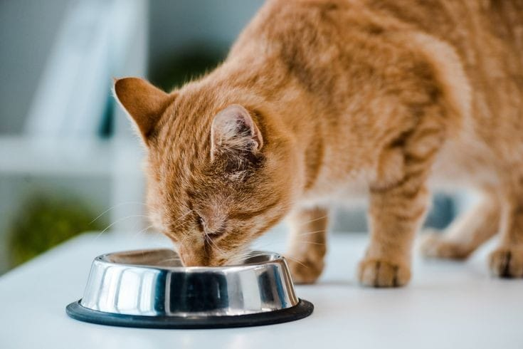

A Guide to Puppy Feeding
Feeding your puppy a balanced and tailored diet is crucial for their healthy growth and long-term
well-being.
How Are Puppies’ Nutritional Needs Differ from Dog's?
Puppies have different dietary needs than adult dogs or humans. While they grow, play, and learn, they
require specific nutrition to support their developing bodies. Their food should be more energy-dense
to fuel their rapid growth and have the right balance of calcium and phosphorus for healthy bone
development. Since puppies can have a difficult time regulating their food intake, it's important for
you to control their portions. Eating too much and growing too fast can lead to obesity and various
health issues, affecting their quality of life, including bone and joint problems and digestive
disorders.
How much should you feed your puppy?
As your puppy grows, their feeding schedule will change.
During weaning, divide daily meals into at least four portions. For small breed dogs, stick to at
least four meals a day until they're four months old, then switch to at least two meals a day until
ten months. Larger breeds should also have at least three meals a day until they're six months old,
then switch to at least two meals a day until a year.
It's important to note that dogs don’t need dietary variety like humans do. They thrive on a
consistent food routine, which can start from their early months: same food, same bowl, same
times—every day.
Feeding your Puppy: the basics
If you’re worried you don’t know what to feed your new puppy and when, there are a few things you
should know:
Transitioning to SolidsPuppies rely on their mother’s milk for the first few weeks, gaining
vital antibodies.Introduce solid foods during weaning. Puppy-specific wet or dry food
works well. Moisten dry food with water or milk replacer at first.
Gradual Diet Changes: Always transition new foods over a week to avoid upsetting their
stomach.
Moistening Food: Start with moistened dry food for younger puppies, transitioning to dry
kibble as their teeth develop.
How do your puppy’s healthy development needs change?
Puppies' dietary needs change as they grow into adulthood, which happens at different ages depending
on their breed size. Larger breeds like Labrador Retrievers reach adulthood around 15 months, while
smaller ones like Jack Russell Terriers do so around 10 months.
Birth to 1 Month:During the first month, puppies transition from mother's milk to solid food,
needing balanced nutrients to support their delicate digestive system.
2 to 4 Month:From 4 to 10 months, puppies continue to build mass and need protein-rich food to
support growth. Overfeeding can cause issues, so follow recommended portions based on breed and age.
4 to 7 Month: From 10 months to adulthood, puppies need extra support for joint health,
particularly for larger breeds. Adjust their food intake accordingly and seek advice from a feeding
chart or your vet if needed.
10 Months to adulthood: Canned or pouched, wet food is an alternative or a complement to dry
food and
removes
the need to add water. Many kittens and adult cats eat a mixed diet of dry and wet food.